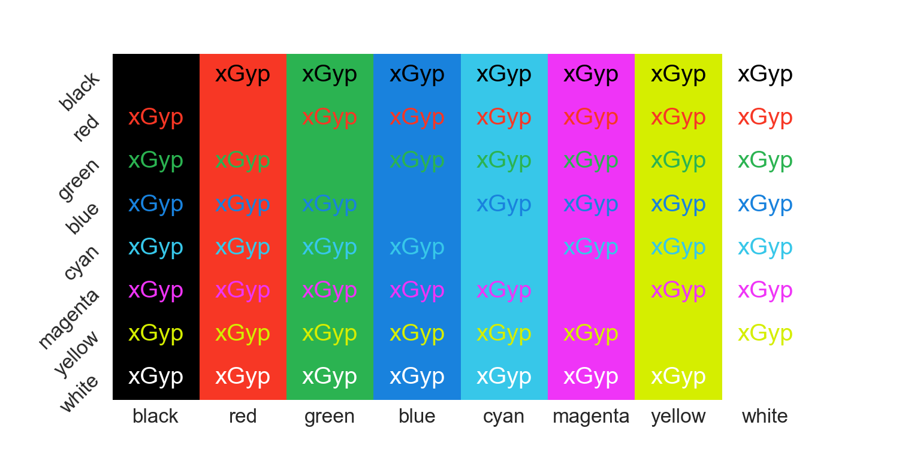

Designing Optimal 3-bit Color Profiles, Pt 1
Color themes are an incredibly personal choice. One place this comes up is in terminals, where the ASCII standards provide both 3-bit and 4-bit colors. Three-bit colors were in the original standard; four-bit colors added a “bright” code. As with all the standards, the good part is there are so many to choose from. Here we will be concerned with choosing the eight original three bit colors: black, red, green, blue, cyan, magenta, yellow, and white.
What makes choosing these eight colors hard is that each can be used for both the foreground and background. Thus, if we are not careful, there can be combinations of foreground and background colors that yield illegible combinations. For example, if we use the eight corners of the RGB color cube there are several pairings that are hard to distinguish: e.g., yellow/white, cyan/white, and cyan/green. Colors from the 8 corners of the RGB color cube
Goal will be to choose colors such that these pairings are easier to read. There are three components to this approach:
- generate a list of 24-bit colors corresponding to a color name,
- choose a metric for evaluating readability,
- from the available colors for each color name, pick those that maximize readability.
Picking Colors Corresponding to a Color Name
Suppose we want to choose a shade of red for terminal colors. What colors correspond to the name “red”? We could manually set some possible shades, but there is an easier way. In 2010, Randall Munroe of XKCD conducted a color survey asking readers to name a presented color. We will determine what counts as “red” by querying this survey and pick shades of red that most readers can agree on.
The challenge with this survey is there are only 5 million responses and 16 million 24-bit colors (8-bits in each of red, green, and blue). So there are many colors that don’t have names and even more that we are counting on a single reader to have named. To resolve this, we will use a kernel density estimate to infer what counts as red. However we need to be careful. Distances in the red, green, and blue channels don’t correspond well to what the human eye sees. So first we convert these colors into the perceptually uniform Oklab color space. Then we construct a kernel density estimate using a fixed bandwidth and choose those colors of “red” that fall within 50% of the density. Doing so for each color yields the following map of allowable shades below, where we have marked the maxima of the density estimate with a white dot. Colors corresponding to red, green, blue, cyan, magenta, and yellow according to the XKCD color survey
Evaluating Readability
There are several standards for evaluating the readability different text colors on different colored background. Here we use the APCA metric which performed better than the WCAG 2 contrast spec in my experiments.
We have 56 color combinations to evaluate (8 foreground, 8 background, minus the eight of the same color). To provide an objective, we use the sorted list of these scores. Then when comparing two potential color maps, we compare the first item in each list and the one with the larger value is best. If there is a tie, we continue on to the next item until the tie is broken.
Optimization
Finding the best color map is a large scale, discrete optimization problem. Holding white and black fixed, we need to choose the best combination of six colors, where, for each, we have many possibilities
| red | 169013 |
| blue | 854973 |
| green | 776283 |
| magenta | 515204 |
| cyan | 345155 |
| yellow | 170906 |
This yields 1033 possibilities—far too many to evaluate. Moreover, due to our objective, we do not have derivatives.
What I found most effective at solving this problem was a pattern search. For each channel (red, green, and blue) on each color, I tried multiple shifts holding the rest constant. I through out those that left the region of the color above. Then after no local improvement was obtained, I shrunk the shift size until there was no improvement possible shifting by one.
Result
Keeping the original color names, after optimization I got the following set of colors.  Optimized colors
This improves several of the color pairings—yellow/white, cyan/white, and cyan/green— but now magenta/cyan and magenta/red are more difficult to parse.
Interestingly, the optimal colors do not appear on the boundaries of the color space. The shades found are marked with an “x” below
Future Work
This color scheme is not the prettiest: the yellow color is more of a puke. However, there is a clear avenue to improve this result: expand the possible colors for each color code.
The other main question is expanding this to the bright colors as well, where we now need to optimize 16 different colors.
Finally, we could consider more sophisticated algorithms for this optimization problem: e.g., a genetic algorithm. Genetic algorithms are notoriously difficult to tune, so we leave this discussion until later.